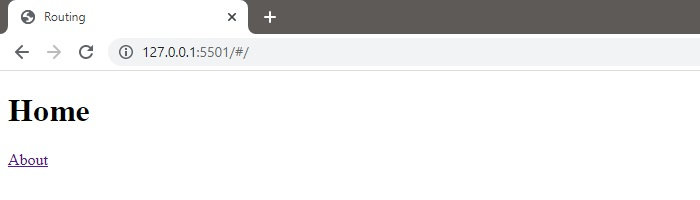
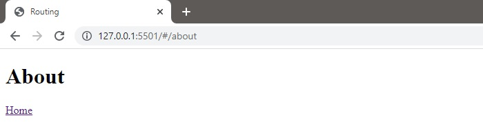
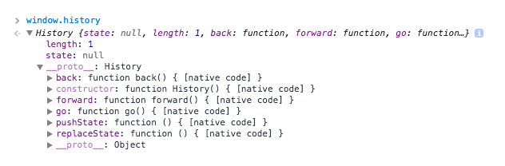

Demonstrating concept
Create two files:
1. index.html
2. script.js
In index.html, create a div with the id: “app”. Also, link the script.js file.
In script.js file, create two objects to hold the routes and the template functions that will be rendered.
Then create two functions to display the home and about pages.
Define the routes. A route is defined by a path and a template to be rendered.
The next step is to register a function that will act as a template engine.
And we can map a template to a route:
Define the route to template mapping:
Also we need to do is to detect and resolve the changes in the URL to render the correct template, as demonstrated below:
Create a router function that will retrieve the route from the URL hash and call the template function.
To switch between views, you need to listen for the load and hashchange events.
When we open the index.html file in our browser, we should see the home page.
Click the about link should navigate us to the about page.
The HTML5 history API is a standardized way to manipulate the browser history via script. Part of this API — navigating the history — has been available in previous versions of HTML. The new parts in HTML5 include a way to add entries to the browser history, to visibly change the URL in the browser location bar (without triggering a page refresh), and an event that fires when those entries are removed from the stack by the user pressing the browser’s back button.
The HTML5 History API gives developers the ability to modify a website’s URL without a full page refresh. This is particularly useful for loading portions of a page with JavaScript, such that the content is significantly different and warrants a new URL.
To check out the features of this API it’s as simple as heading into the Developer Tools and typing history into the console.

So let`s take our example code from routing and to added history api.
Now our index.html
It is out old code
Create function createMyHistory
So we've covered the basic history api example. We see that routing and history api are closely related.
There is no question that the History API has a place in modern web applications. As we continue to develop increasingly complex client-side applications we need to make sure that we don’t break the native functionality of the browser. The History API provides a simple solution to this problem. With great browser support there really is no reason why you can’t start using this today.